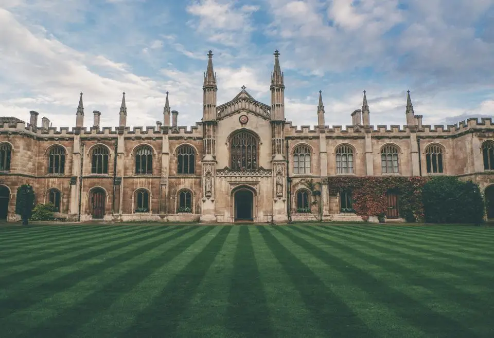
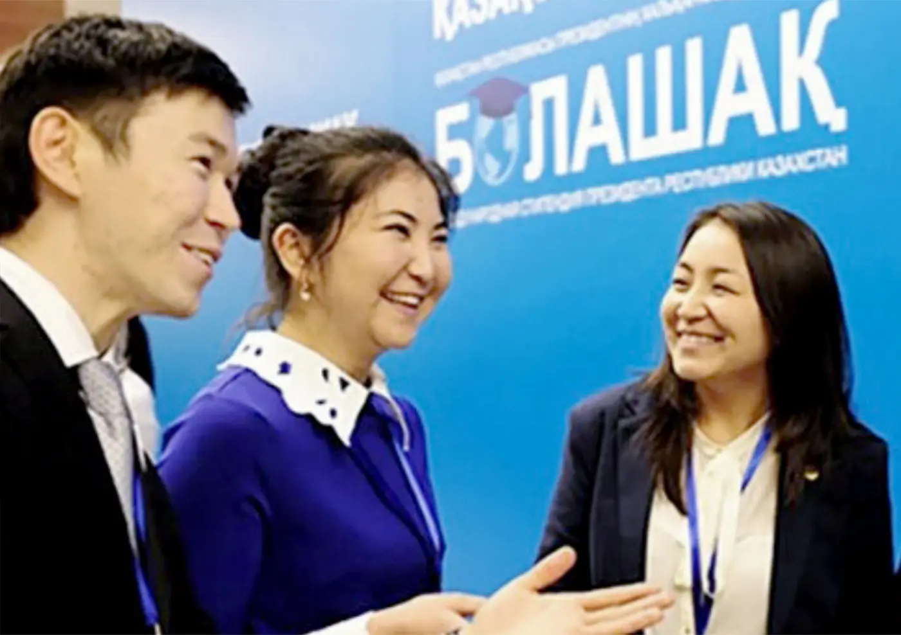
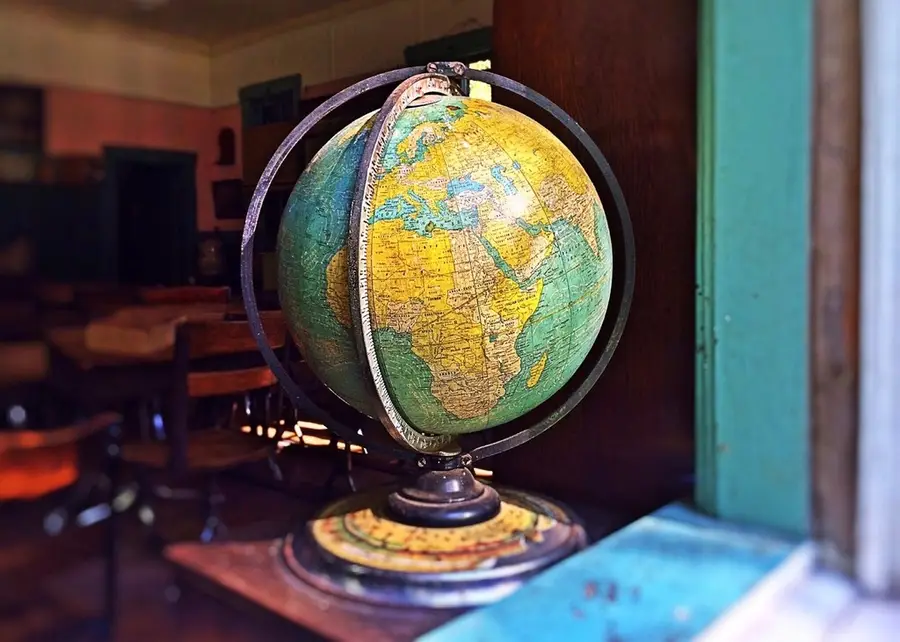

06 · Экран пополам, фото меняется
Левая половина с текстом закреплена. Справа каждое новое фото поднимается снизу шторкой и закрывает прежнее, прежнее чуть отъезжает и темнеет. Слова абзаца появляются волной.
Пример на Awwwards: Union Properties ↗Прокрутите вниз: блок закрепится и покажет историю в четыре шага
О компании
Постановлением Правительства Республики Казахстан от 4 апреля 2005 года №301 создано акционерное общество «Центр международных программ» со 100-процентным участием государства в уставном капитале.
Акционером АО «Центр международных программ» является министерство науки и высшего образования.
Определить основным предметом деятельности АО «ЦМП» - осуществление комплекса мероприятий по международным программам подготовки, переподготовки и повышения квалификации кадров за рубежом, в том числе международной стипендии Президента Республики Казахстан «Болашак».
АО «Центр международных программ» администрирует программу «Болашак», научные стажировки, а также межправительственные гранты. Центром проводится прием документов, конкурсный отбор.
Подробнее



Тексты блока — с bolashak.gov.kz, слово в слово. Фото Астаны: Ken and Nyetta, CC BY 2.0, кадрировано; фото кампуса, глобуса, библиотеки — CC0; остальные фото — с сайта Центра. Анимации выключаются при настройке «уменьшить движение».